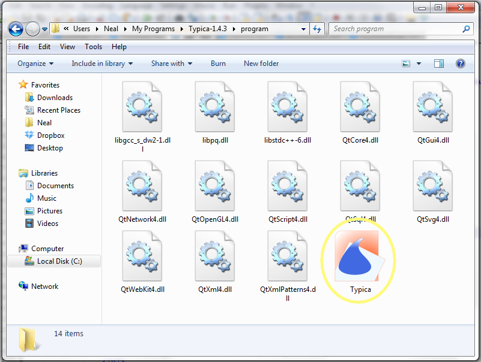
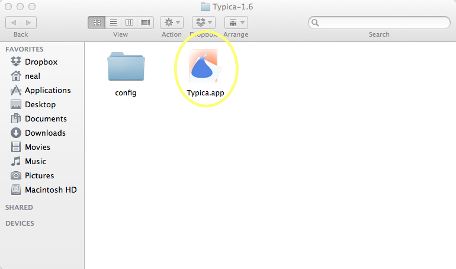

Opening the Application
The initial location of Typica depends on which platform you are using.
Microsoft Windows
On Microsoft Windows, you should find the files distributed with Typica in two folders. The executable is located in the "program" folder.
Double click the file "Typica.exe" (the .exe extension may or may not appear depending on your system configuration) to start the program. Note that it does not matter where this file is located on your system, however it must be in the same folder with its .dll files. It is possible to create shortcuts in various places to simplify starting Typica.
Mac OS X
On Mac OS X the libraries used by Typica are hidden within the .app bundle so there is no separate "program" folder.
Double click the file "Typica.app" (the .app extension may or may not appear depending on your system configuration) to start the program. Note that it does not matter where this file is located on your system. It is possible to create aliases in various places to simplify starting Typica.
What Happens Next?
When Typica starts, it will bring up one of three windows.